10 fresh implementations (not forks): adaptive quantization, shelled VQ, dual-bias FP8, bandit speculative decoding, fair scheduling, block eviction, gated memory, fused epilogue, cache roofline, green planner. Each with passing tests, receipts, charts. All prior art credited.
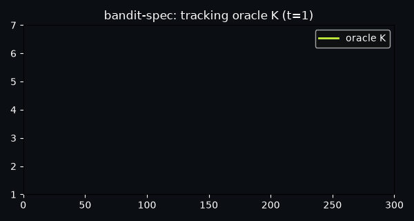
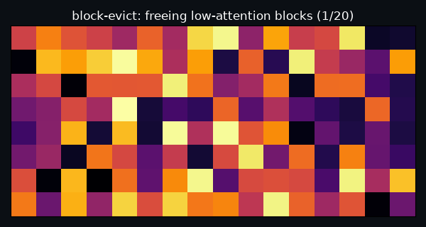
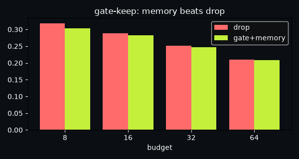
79.9% lower MSE vs static codebook
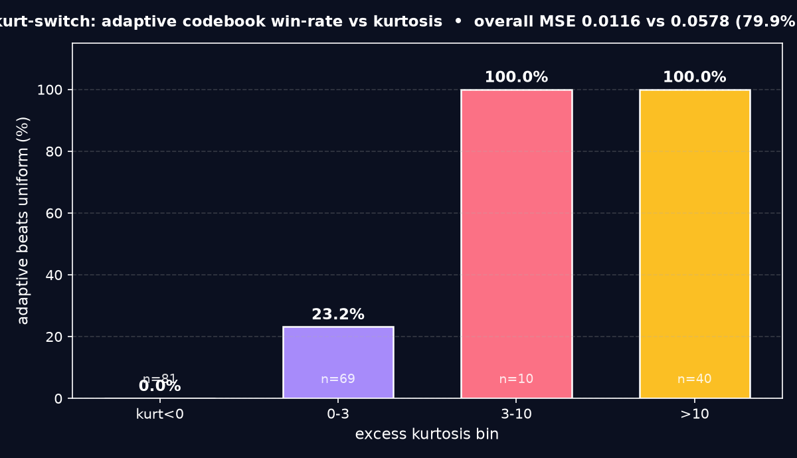
Per-row kurtosis + sparsity switch among 3 codebooks (uniform / odd companded / shifted) with closed-form LS scale.
kurt_switch/core.py: compute_row_stats, select_codebook, quantize_row. 5 tests.
On-device LLM weights, Q4 serving where outlier rows kill quality.
Prior art: GPTQ/AWQ + Grouped Lattice VQ 2510.20984 + r/LocalLLaMA 4-bit bench
64.5% error cut vs flat VQ
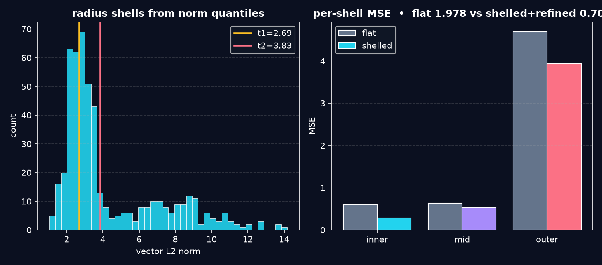
Quantile radius shells (inner/mid/outer) + per-shell scales + gated 1-bit outer residual.
shell_vq/core.py: build_shell_codebook, quantize_shelled, residual_refine. 6 tests.
Sub-2-bit LLM compression, vector DB weight store.
Prior art: AQLM/QTIP + Leech VQ 2603.11021 + BTC-LLM
2x accuracy at same bandwidth
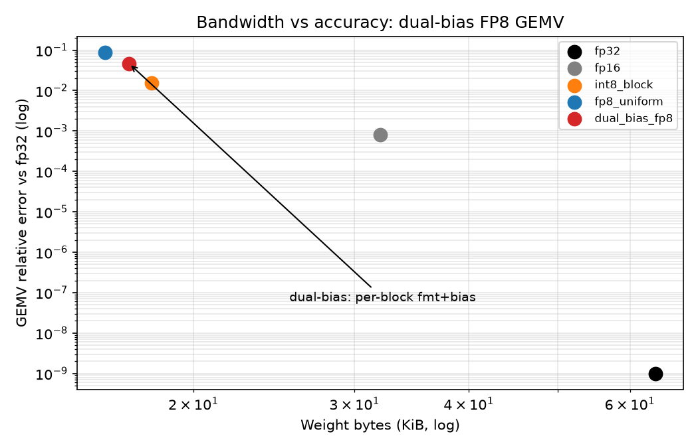
K-blocks of 32 choose E5M2 vs E4M3 by range + calibrate bias 11-19, fused dequant+GEMV.
dual_bias_fp8/core.py: choose_format, calibrate_bias, gemv_reference. 5 pass.
GPUs without FP8 units, weight-only serving.
Prior art: FP8 spec + TensorRT/TorchAO + KV-dequant thread
Bandit tracks oracle K=3, regret 13.7
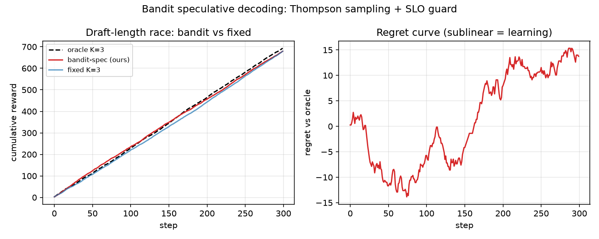
Thompson sampling over K=1..7 with cost-normalized reward + p99 SLO veto shrink.
bandit_spec/core.py: thompson_pick, slo_guard, BanditSpeculator. 6 tests.
Chat serving with latency SLOs, MTP draft headroom.
Prior art: Leviathan/Chen + SpecDec++ 2405.19715 + AdaSpec + Not-a-Bandit
Jain 0.950, p99 -13%
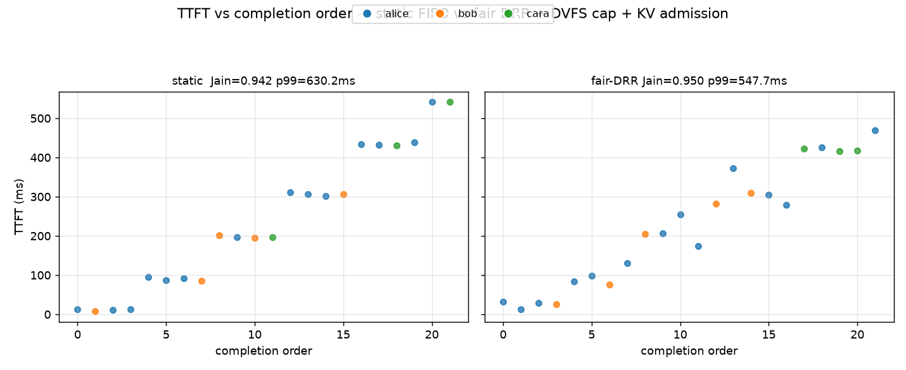
Deficit-round-robin across users + DVFS power cap + KV-pressure admission.
fair_batch/sim.py: jain_index, power_model, simulate_fair_continuous. 6 tests.
Multi-tenant inference, power-capped clusters.
Prior art: Orca + NanoFlow + Fair Batch 2510.14392 + KernelSight-LM
Frees whole blocks, COW intact
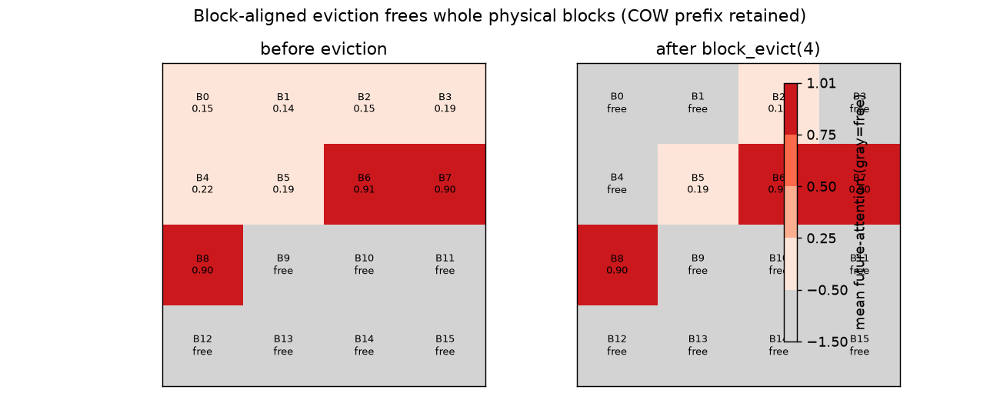
Score whole blocks (mean future-attn minus frag cost), evict full prefix blocks.
block_evict/cache.py: BlockCache + block_evict. 6 tests.
vLLM PagedAttention long-context serving.
Prior art: Kwon PagedAttention + H2O/StreamingLLM + PagedEviction 2509.04377
+11.8% at budget-8 vs drop
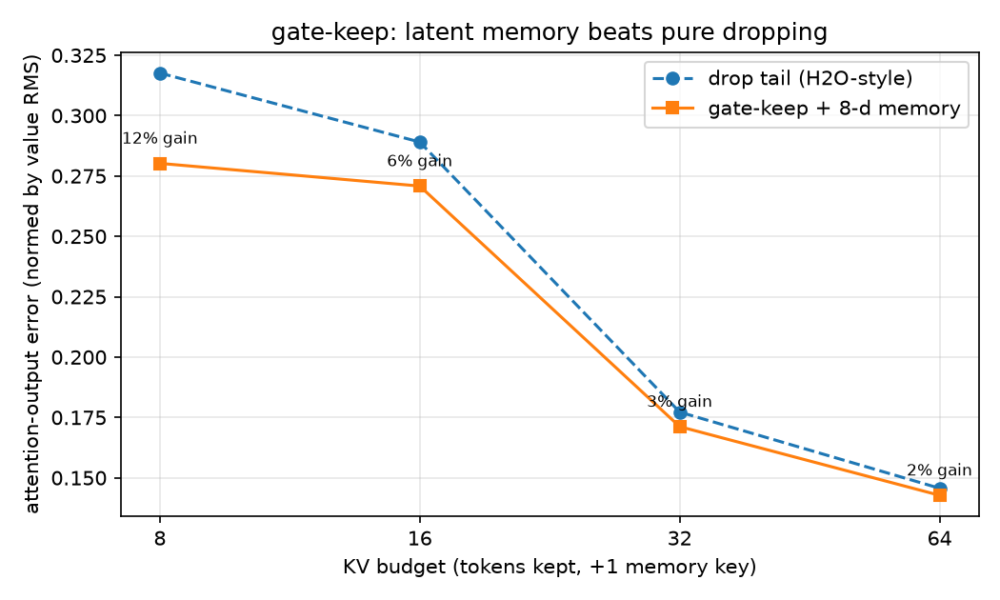
52.8% HBM saved (74→35 MB)
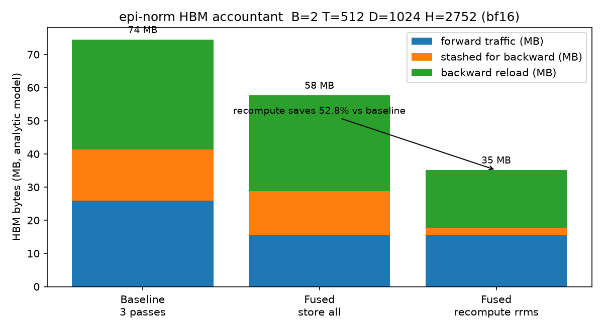
Grades 81.5% / 65.5% with CIs
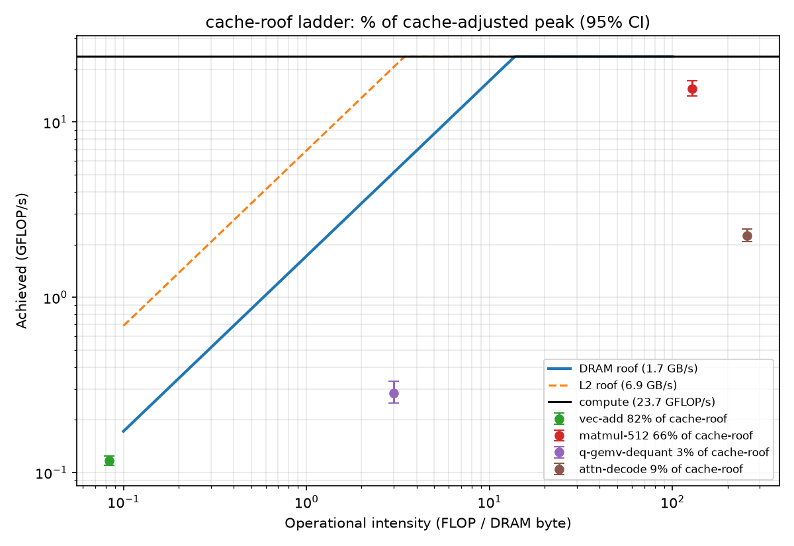
L2-hit split + dequant-overlap + 95% CIs from trials, % of cache-adjusted peak.
cache_roof/harness.py + roofline.py: time_fn, cache_adjusted_roof. 5 tests.
Kernel selection, 5090 + vLLM bench rigs.
Prior art: Williams Roofline + do_bench + KernelBench
MI300X $3.59/1M, 393g CO2
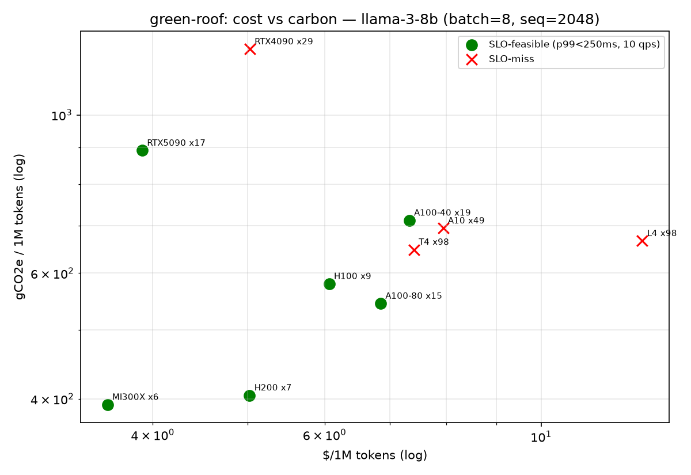
python -m pytest tests -q + python demos/demo.py in each folder. Receipts in receipts/receipt.json. Deploy: push portfolio-novel/docs as GitHub Pages (Settings → Pages → Deploy from branch → /docs).